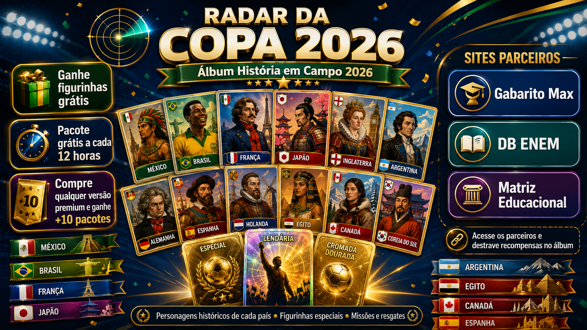

Início em 11 de junho
A Copa começa em 11 de junho de 2026. O Radar Copa acompanha guias, curiosidades, sedes, grupos e chamadas para o álbum.
Copa do Mundo 2026 • álbum digital • simulados

Comprando qualquer versão premium dos parceiros, você ganha +10 pacotes no álbum.
Notícias reais e guias permanentes
Calendário e formato
A Copa começa em 11 de junho de 2026. O Radar Copa acompanha guias, curiosidades, sedes, grupos e chamadas para o álbum.
Canadá, México e Estados Unidos recebem a edição histórica com 48 seleções e 104 jogos.
O novo formato amplia a competição, aumenta o número de histórias e combina com a proposta do álbum digital.
Durante o torneio, o site pode divulgar códigos, missões e bônus para manter os colecionadores ativos.
Missões do colecionador
Abra um envelope grátis a cada 12 horas.
📚Acesse o álbum e resgate figurinhas nas ações diárias.
✅Entre no parceiro e ganhe recompensa no álbum.
🧠Simulados e testes liberam figurinhas.
✍️Estudo e premium destravam pacotes extras.
📰Notícias e campanhas também viram missão do álbum.
Personagens históricos
Qualidades das figurinhas
Acabamento matte, opaco, limpo e com foco no personagem.
Silver Chrome Card com bordas cromadas e brilho prateado.
Holofoil Card com reflexos iridescentes em arco-íris.
Gold Card com textura de ouro escovado e brilho premium.
Vintage Gold: ouro antigo, clássico e com ar de autoridade.
Códigos promocionais
Divulgue um código especial nas redes do Radar Copa para liberar figurinhas raras ou pacotes extras.
Exemplo: SEXTA-RARA-2026Mesmo se o Brasil não avançar em alguma fase, o código pode virar evento comemorativo do álbum.
Exemplo: BRASIL-EM-CAMPOAlém dos pacotes normais, o site pode divulgar a campanha semanal para aumentar retorno e engajamento.
Exemplo: DOMINGO-5-PACOTESEstude e ganhe pacotes
A redação pode ajudar o aluno a melhorar sua nota final e aumentar suas chances em programas como SISU, PROUNI e FIES. No ecossistema Radar Copa, estudar também pode render pacotes e recompensas no álbum.
Sem promessa de aprovação garantida: a proposta é treino, preparação e evolução.
Bônus especiais
Quem compra uma versão premium individual recebe link de resgate com pacotes extras no álbum.
Oferta especial para acelerar a coleção. A regra correta é “até 600 figurinhas”, pois podem existir repetidas.
Testes gratuitos podem liberar figurinhas conforme desempenho, seguindo o controle de resgate do álbum.
Ecossistema de parceiros